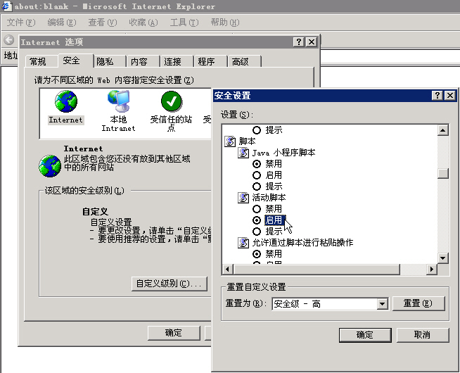
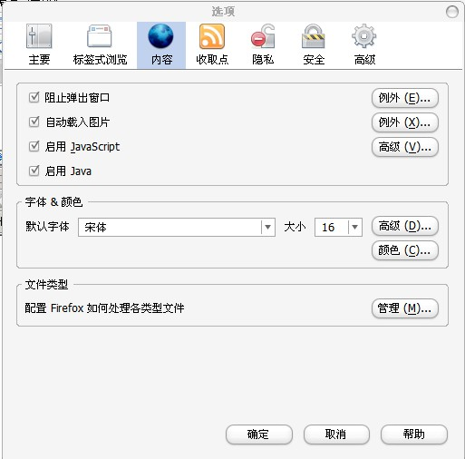

IE解决办法：
1、打开IE，点击“工具”菜单，在弹出的子菜单中选择“Internet选项”； 2、在弹出的“Internet选项”窗口中，选择“安全”选项卡，点击“自定义级别”； 3、在弹出的“安全设置”窗口中，找到“脚本”下“活动脚本”的选项，改为“启用”； 4、点击“确定”关闭“安全设置”窗口； 5、点击“确定”关闭“Internet选项”窗口； 6、刷新网页或关闭IE后重新打开本系统。

Firefox解决办法：
1、打开Firefox，点击“工具”菜单，在弹出的子菜单中选择“选项”； 2、在弹出的“选项”窗口中，选择“内容”选项卡； 4、点击“启用Javascript”； 5、点击“确定”关闭选项； 6、刷新网页或关闭Firefox后重新打开本系统。
